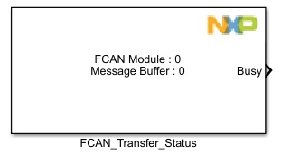
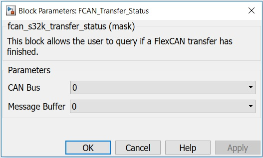

FCAN Transfer Status Block
This block allows the user to query if a FlexCAN transfer has finished.
Block Image
Inputs:
- None
Outputs:
- Busy (bool)
- true - A FlexCAN transfer using the specified MB is in progress.
- false - There isn't any FlexCAN transfer using the specified MB in progress.
Parameters and Dialog Box
CAN Bus
Selects the CAN Bus.
Message Buffer
Selects the Message Buffer for which the transfer status is queried.
Block Dependency
Block Miscellaneous Details
- None